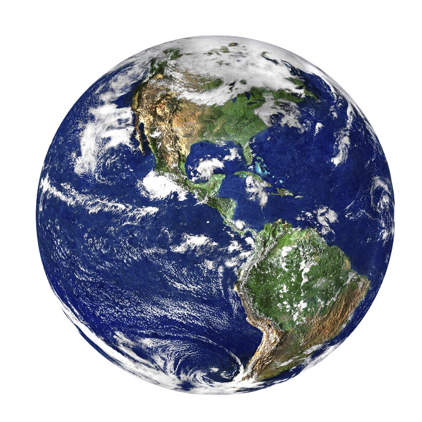

Hello, Cat Lovers!
Welcome to Cats Around the Globe, my little passion project where I share the cats I’ve met during my
travels. Each photo tells a story, and I’m thrilled to let you peek into these special moments.
Thanks for stopping by, and I hope you enjoy the journey as much as I do. — Raven 🐾
